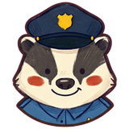
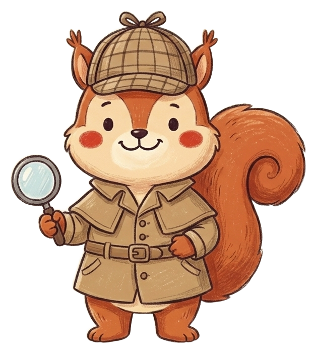

추리 단계 시안 비교
셋 다 Case 01 데이터로 움직여요. 1번은 인물을, 2번은 칠판 줄을 눌러 증거·진술을 내밀고, 4번은 기사 빈칸을 누른 뒤 아래 단어를 눌러요.
1번 · 8시 40분의 마을

- 밤의 마을 지도, 오른쪽 위에 플레이어가 찍은 멈춘 시계 사진. 글자 없음.
- 용의자는 자기가 있었다고 말한 곳에 흐릿하게 서 있다(두더지는 말한 곳이 없어 지도 가장자리).
- 인물을 누르면 그 사람의 말(노트, ▶)과 증거·진술 줄. 받쳐 주면 그 자리에 진하게 고정(✓, 불빛), 어긋나면 튕겨 나와 떠다님(?), 상관없으면 경사 한마디.
- 모두 정해지면
범인 지목하기.
4번 · 내일 아침 신문
The Acorn Hollow Times
Morning editionOne acorn
Who Was Where at 8:40?
1면 사진
- 탐정이 쓰는 다음 날 신문 1면. 용의자마다 한 단락, 빈칸은 노트에서 들은 단어로 채운다(아래 단어 = 노트에 적은 단어).
- 단락의 빈칸이 다 맞으면 알리바이 확인 도장. 피오나 단락은 그녀의 말 뒤에 증거 문장("But the sign said …")이 붙어 채우는 순간 수상함.
- 틀린 단어면 빈칸이 흔들리고 경사 한마디.
- 네 단락이 끝나면 빈 1면 사진 칸이 깜빡이고, 누르면 사진을 고른다 = 지목.
2 · 칠판 앞의 탐정
Who was where?

- 탐정 사무소의 칠판. 탐정이 혼자 칠판 앞에 서 있다(오소리 경사 없음). 지도는 쓰지 않는다.
- 칠판에 용의자 사진이 자석으로 붙고, 옆에 그 사람의 알리바이가 분필 글씨로 적혀 있다(노트에 받아 적은 문장, 채운 단어는 노란 분필, ▶).
- 줄을 누르면 증거·진술 서랍. 받쳐 주면 노란 분필 ✓와 밑줄, 어긋나면 사진에 분홍 분필 동그라미 + ?.
- 상관없는 짝이면 탐정이 혼잣말(플레이어 탐정 목소리, 해석 버튼). 예: "A poster only shows the plan. Did he really play?"
- 네 줄 모두 표시되면
범인 지목하기.